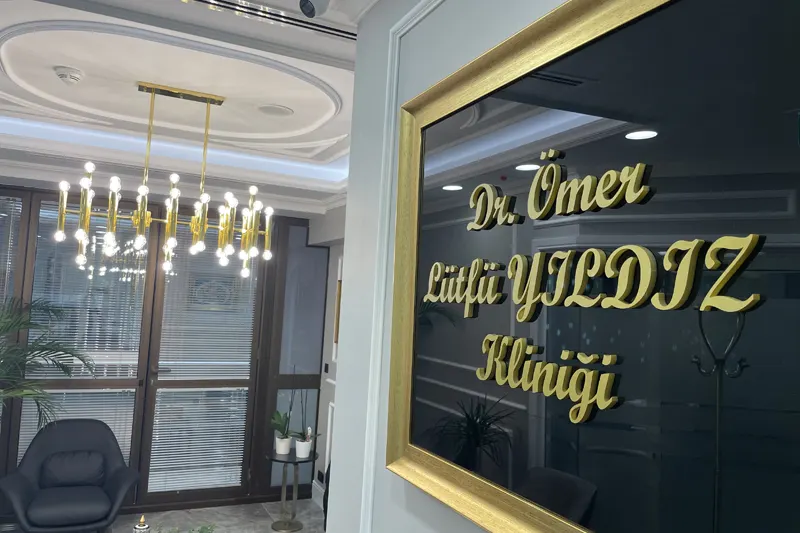
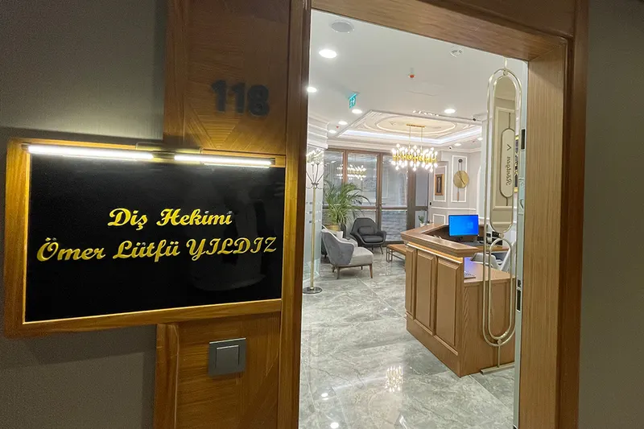
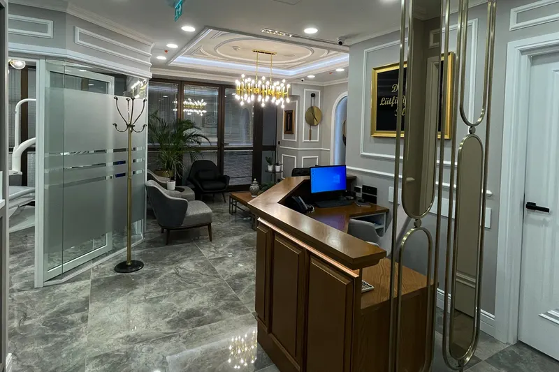
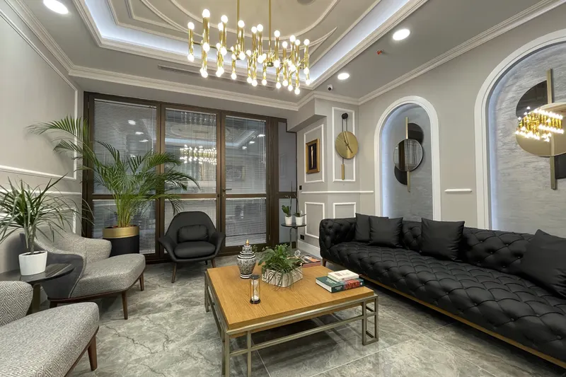
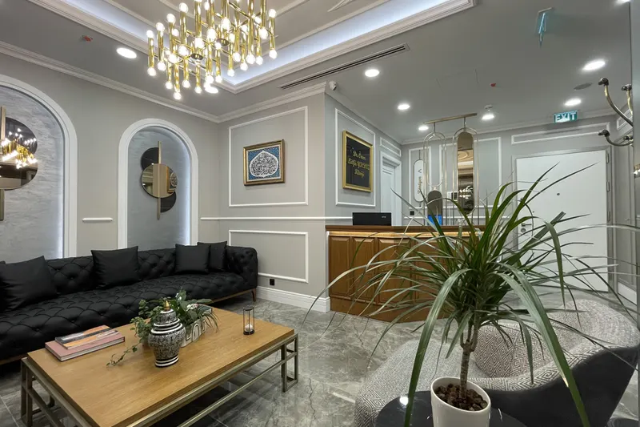
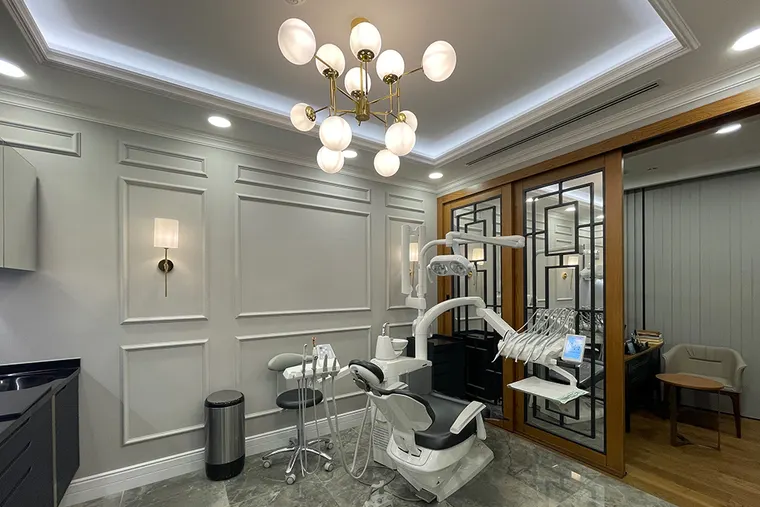
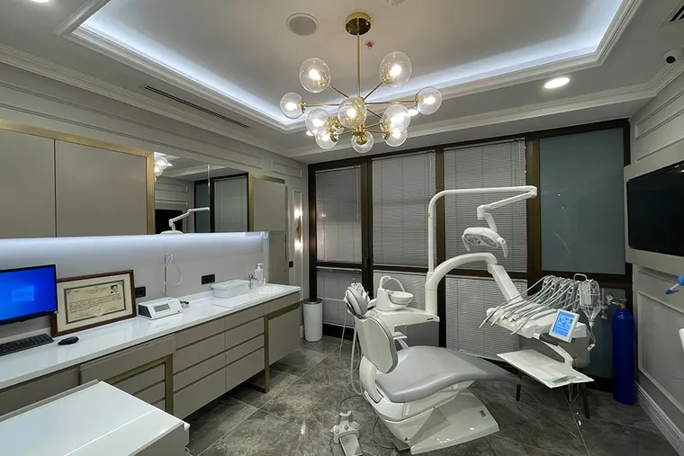

Ataköy · Bakırköy · İstanbul
Gülüşünüz sizi yansıtır
Ağız ve diş sağlığınızla 1999'dan bu yana ilgileniyorum. Ataköy'deki kliniğimde muayeneden tedavi planına kadar her adımı anlaşılır bir dille anlatır, kararı birlikte veririz.

1999'dan bu yana Diş hekimliği
Hakkımda
Tedaviyi anlatarak, birlikte karar vererek
1978 yılında Trabzon'da doğdum. Affan Kitapçıoğlu Lisesi'nin ardından İstanbul Üniversitesi Diş Hekimliği Fakültesi'nde okudum ve 1999 yılında mezun oldum.
Mesleğimde lazer destekli diş hekimliği, oral implantoloji ve cerrahi diş hekimliği alanlarıyla ilgileniyorum. Ataköy'deki kliniğimde her hastanın durumunu ayrı değerlendirir, seçenekleri ve sınırlarını açıkça anlatırım.
- İstanbul Üniversitesi Diş Hekimliği Fakültesi, 1999
- Lazer destekli diş hekimliği İlgi alanı
- Oral implantoloji İlgi alanı
- Cerrahi diş hekimliği İlgi alanı
Dt. Ömer Lütfü Yıldız Diş Hekimi · İngilizce bilmektedir
Tedaviler
Ağız ve diş sağlığında sunduğum tedaviler
Her tedavi öncesinde ağız içi muayene yapılır, uygun seçenekler ve beklenen süreç anlatılır. Aşağıdaki başlıklar kliniğimde uyguladığım tedavilerdir.
-
Diş Beyazlatma
Çay, kahve, sigara ve zamanla oluşan renklenmelerin giderilmesini hedefleyen uygulamadır. Öncesinde diş eti ve dolgu durumu değerlendirilir; hangi renk aralığının mümkün olduğu muayenede konuşulur.
-
Dijital Gülüş Tasarımı
Ağız içi ölçü ve fotoğraflar dijital ortama aktarılarak planlama yapılır. Tedaviye başlamadan önce olası sonucu birlikte görür, diş formu ve boyutları üzerinde konuşarak karar veririz.
-
Dental İmplant
Eksik dişin yerine çene kemiğine yerleştirilen vida ile kalıcı bir destek oluşturulur. Uygunluk kemik yapısına bağlıdır; bu nedenle planlama öncesinde radyolojik değerlendirme yapılır.
-
Gülüş Tasarımı
Dişlerin biçimi, dizilimi ve diş eti görünümü yüz hatlarıyla birlikte ele alınır. Amaç abartılı bir değişim değil, kişinin yüzüne uyan dengeli ve doğal bir görünümdür.
-
Diş Estetiği
Kırık, aşınmış veya boyut olarak uyumsuz dişlerde görünümü düzeltmeye yönelik uygulamaların tümünü kapsar. Hangi yöntemin uygun olduğu dişin sağlam doku miktarına göre belirlenir.
Klinik
Ataköy'deki kliniğim
Ataköy Towers'ta, E-5 Yanyol üzerindeki kliniğimde ağız ve diş sağlığıyla ilgili tedavileri uyguluyorum. Bekleme alanından tedavi odalarına kadar her bölüm, sakin ve düzenli bir muayene deneyimi için kuruldu.
- İki ayrı tedavi odası ve bağımsız muayene alanı
- Ataköy Towers B Blok, 9. kat, daire 118
- E-5 Yanyol üzerinde, Ataköy — Bakırköy






Nasıl ilerliyoruz
Tedavi süreci
Her tedavi aynı sırayı izler. Amaç, hangi aşamada ne yapılacağını baştan bilmeniz ve kararı bilgiyle vermenizdir.
Şikâyetinizi ve beklentinizi dinlerim. Ardından ağız içi muayene ile dişlerin, diş etlerinin ve varsa mevcut dolgu ve protezlerin durumuna bakarım.
Gerekli görüntüleme ve ölçüler alınır. Uygun tedavi seçenekleri, her birinin gerektirdiği süre ve sınırları anlatılır; hangisiyle ilerleyeceğimize birlikte karar veririz.
Planlanan tedavi, gereken seans sayısına bölünerek uygulanır. Her seans öncesinde o gün ne yapılacağı, sonrasında nelere dikkat etmeniz gerektiği anlatılır.
Tedavi tamamlandıktan sonra kontrol randevusu planlanır. Günlük ağız bakımı ve düzenli kontrollerin sıklığı, uygulanan tedaviye göre ayrıca konuşulur.
Muayene için randevu alın
Şikâyetinizi telefonda kısaca anlatın, uygun bir gün ve saat belirleyelim.
0212 809 03 00İletişim
Kliniğe ulaşın
Ağız ve diş sağlığıyla ilgili sorularınız için telefonla ulaşabilir ya da e-posta gönderebilirsiniz.
Adres
Ataköy Towers, E-5 Yanyol No:20/2
B Blok K:9 D:118
Ataköy — Bakırköy / İstanbul